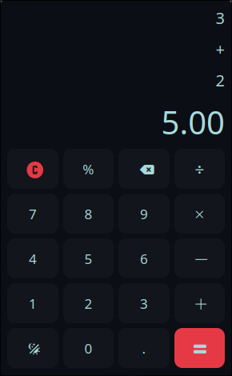
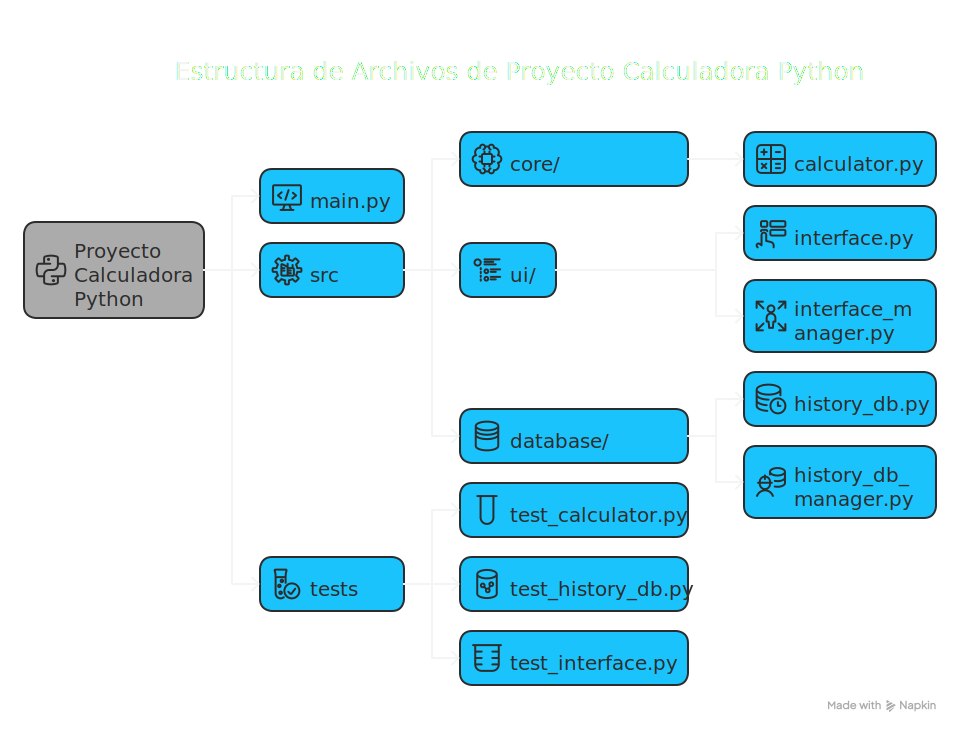

Proyecto Calculadora Python


Descripción General
Proyecto Calculadora Python es una aplicación de calculadora de escritorio construida con Python y el framework PyQt5 para su interfaz gráfica de usuario. Ofrece operaciones aritméticas estándar con alta precisión y mantiene un historial de cálculos. El proyecto enfatiza una arquitectura limpia y modular, haciéndola fácil de entender y mantener.
Capturas de Pantalla
Interfaz Principal

Vista principal de la calculadora con botones numéricos y operaciones básicas
Características
- Interfaz Gráfica de Usuario (GUI): Interfaz intuitiva y responsiva impulsada por PyQt5.
- Operaciones Aritméticas Estándar:
- Suma (+)
- Resta (-)
- Multiplicación (×)
- División (÷)
- Porcentaje (%)
- Cálculos de Alta Precisión: Utiliza el módulo
decimalde Python para asegurar precisión, especialmente importante para cálculos financieros o científicos. - Historial Persistente de Cálculos: Guarda automáticamente el historial de cálculos en una base de datos SQLite local, permitiendo a los usuarios revisar operaciones pasadas.
- Arquitectura Modular: Separación bien definida de responsabilidades entre la interfaz de usuario, la lógica de cálculo y las capas de persistencia de datos.
Inicio Rápido
# Clonar el repositorio
git clone https://github.com/Gustavo9481/Calculadora_Python.git
cd Calculadora_Python
# Instalar uv (si no lo tienes)
curl -LsSf https://astral.sh/uv/install.sh | sh
export PATH="$HOME/.cargo/bin:$PATH"
# Crear entorno virtual e instalar dependencias
uv venv
source .venv/bin/activate # En Windows: .venv\Scripts\activate
uv pip install -e .
# Ejecutar la aplicación
python main.py
Descripción de la Arquitectura
La aplicación está diseñada con un enfoque modular, con componentes clave que incluyen:
AppCalculator: El orquestador principal de la aplicación. Inicializa la UI y la conexión a la base de datos, actuando como una Fachada para simplificar el proceso de inicio.- Componentes de UI (
InterfaceCreator,ButtonsCreator,ScreensCreator): Estas clases son responsables de construir y manejar los diversos elementos de la interfaz gráfica basada en PyQt5. Calculator: Una clase utilitaria sin estado que proporciona métodos estáticos para todas las operaciones aritméticas. UtilizaDecimalpara precisión ylru_cachepara optimización de rendimiento.HistoryManager: Maneja todas las interacciones con la base de datos SQLite para almacenar y recuperar el historial de cálculos. Está implementado como un Singleton para asegurar una sola conexión a la base de datos.HistoryTableDB: Un Objeto de Transferencia de Datos (DTO) utilizado para manejar registros del historial.
Se emplean varios patrones de diseño para mejorar la estructura y mantenibilidad del código:
* Patrón Fachada: Utilizado por AppCalculator para proporcionar una interfaz simplificada a los subsistemas complejos de inicialización de UI y base de datos.
* Patrón Singleton: Asegura que HistoryManager tenga solo una instancia, gestionando el acceso a la base de datos de forma centralizada.
* Clase Utilitaria Sin Estado: La clase Calculator agrupa funciones aritméticas relacionadas sin mantener ningún estado interno.
Stack Tecnológico
- Lenguaje de Programación: Python (versión 3.8 o superior)
- Framework GUI: PyQt5
- Gestor de Dependencias: uv
- Base de Datos: SQLite (a través del módulo integrado
sqlite3de Python) - Aritmética de Precisión: Módulo
decimalde Python - Caché:
functools.lru_cachepara optimizar cálculos - Pydantic: Para la validación y gestión de datos estructurados.
Prerrequisitos
Antes de ejecutar la aplicación, asegúrate de tener instalado lo siguiente:
- Python 3.8 o más reciente
- uv (gestor de paquetes y entorno virtual)
Instalación
-
Clonar el repositorio (si aplica):
Si tienes los archivos localmente, navega al directorio raíz del proyecto. -
Instalar uv (si no lo tienes):
-
Crear entorno virtual e instalar dependencias:
Uso
Para ejecutar la aplicación calculadora, ejecuta el script principal desde el directorio raíz del proyecto:
Operaciones Básicas
- Números: Haz clic en los botones numéricos para ingresar números
- Operaciones: Usa +, -, ×, ÷ para operaciones básicas
- Porcentaje: Usa el botón % para cálculos de porcentaje
- Historial: Accede al historial desde el menú Ver > Historial
Estructura del Proyecto

Documentación
Este proyecto utiliza MkDocs para generar documentación. Puedes encontrar información detallada sobre clases, métodos y arquitectura en el directorio docs.
Para servir la documentación localmente:
- Instalar MkDocs y el tema Material (si no se ha hecho ya, usando uv):
- Servir la documentación:
Desde el directorio raíz del proyecto, ejecuta:
Esto iniciará un servidor local, y podrás ver la documentación en tu navegador web (usualmente en
http://127.0.0.1:8000).
Para construir el sitio de documentación estática:
Roadmap
Versión Actual (1.0.6)
- [x] Operaciones aritméticas básicas (+, -, ×, ÷)
- [x] Cálculos de porcentaje
- [x] Historial persistente de cálculos
- [x] Interfaz gráfica con PyQt5
- [x] Arquitectura modular
- [x] Binarios precompilados para Linux y Windows (vía GitHub Actions)
Próximas Versiones
- [ ] v1.1.0 - Calculadora Python
- [ ] Temas personalizables (claro/oscuro)
- [ ] Interfaz para historial de operaciones
Problemas Conocidos
- Windows 7: Puede requerir instalación manual de Visual C++ Redistributable
- División por cero: Muestra mensaje de error estándar, considerar implementar manejo más elegante
- Números muy grandes: El rendimiento puede verse afectado con números extremadamente grandes (>1000 dígitos)
- PyQt6: Algunas importaciones pueden necesitar ajustes menores al migrar desde PyQt5
Contribución
¡Las contribuciones son bienvenidas! Aquí te explicamos cómo puedes ayudar:
Proceso de Contribución
- Fork el proyecto
- Crea una rama para tu feature (
git checkout -b feature/CaracteristicaIncreible) - Commit tus cambios (
git commit -m 'Agregar CaracteristicaIncreible') - Push a la rama (
git push origin feature/CaracteristicaIncreible) - Abre un Pull Request
Tipos de Contribuciones
- 🐛 Reportar bugs - Crea un issue describiendo el problema
- 💡 Sugerir features - Propón nuevas características
- 📝 Mejorar documentación - Ayuda a hacer la documentación más clara
- 🔧 Escribir código - Implementa nuevas funcionalidades o arregla bugs
- 🧪 Escribir tests - Mejora la cobertura de pruebas
Guías de Contribución
- Sigue las convenciones de código Python (PEP 8)
- Escribe tests para nuevas funcionalidades
- Actualiza la documentación cuando sea necesario
- Usa mensajes de commit descriptivos
Configuración del Entorno de Desarrollo
# Clonar tu fork
git clone https://github.com/Gustavo9481/Calculadora_Python.git
cd Calculadora_Python
# Crear entorno virtual con uv
uv venv
source .venv/bin/activate # En Windows: .venv\Scripts\activate
# Instalar dependencias de desarrollo (incluye pytest, flake8, pylint, mkdocs)
uv pip install -e .[dev]
# Ejecutar tests
python -m pytest tests/
Licencia
Este proyecto está licenciado bajo la Licencia MIT - consulta el archivo LICENSE para más detalles.
Resumen de la Licencia MIT
- ✅ Uso comercial permitido
- ✅ Modificación permitida
- ✅ Distribución permitida
- ✅ Uso privado permitido
- ❌ Sin garantía
- ❌ El autor no es responsable por daños
Autores
- [GUScode | Gustavo Colmenares] - Desarrollo inicial y mantenimiento - Gustavo9481
Descargas
Puedes descargar las versiones precompiladas de la calculadora para tu sistema operativo desde la página de GitHub Releases.
- Linux:
calculadora-linux.tar.gz - Windows:
calculadora-windows.zip
Agradecimientos
- Inspirado por la calculadora estándar de Android.
- Iconos proporcionados por Phosphoricons
- Documentación mejorada gracias a MkDocs Material
- Comunidad de Python por las excelentes librerías utilizadas
¿Te gusta el proyecto? ¡Dale una ⭐ en GitHub!
Hecho con ❤️ por la comunidad de desarrolladores Python